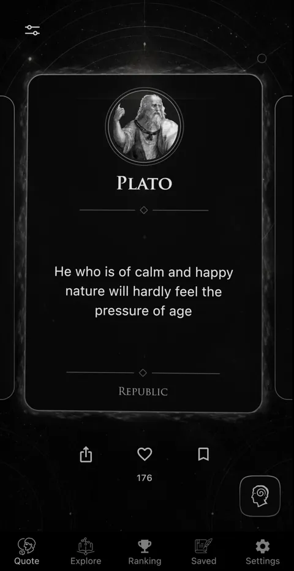

Read Plato quotes about life by identifying the dialogue, speaker, and dramatic setting. Treat the line as an invitation into an argument—then ask what kind of character, education, or community the passage says a good life requires.
Why a Plato quote needs context
Plato wrote dialogues, not a book of personal maxims. Socrates is the central speaker in many of them, but other speakers present myths, speeches, objections, and competing definitions. A memorable line spoken by Cephalus, Glaucon, Diotima, Callicles, or Socrates is part of a dramatic exchange. It should not automatically be labeled Plato's final doctrine.
This is especially important online, where attractive sentences are often attributed to Plato without a dialogue reference. Some are modern paraphrases; others come from later writers. A reliable source gives the work and, ideally, Stephanus numbers—the standard page-and-section references used across editions.
Translations differ too. A phrase may be accurate to the argument while sounding unlike another edition. Compare complete passages and name the translator when quoting a modern version in published work.
Six Platonic ideas about how to live
1. Examination is part of a human life
In the Apology, Socrates defends his questioning life before an Athenian jury. His famous claim that “the unexamined life is not worth living” appears at 38a. The line is not permission to despise ordinary life. It expresses a commitment to testing claims about virtue rather than accepting prestige or convention as proof.
Reflection: Which belief directs your choices while remaining protected from questions?
2. Justice concerns the order of a life
The Republic begins with competing accounts of justice and expands into a thought experiment about a city and soul. Its arguments are controversial, but the central challenge remains powerful: Is justice valuable only for rewards and reputation, or does it shape the person who acts?
Reflection: What would you choose if nobody could praise, punish, or even know about it?
3. Education turns attention
The allegory of the cave in Republic Book 7 portrays education as a difficult reorientation from familiar appearances toward a more adequate understanding. The person leaving the cave is initially disoriented, and returning to help others brings conflict.
Reflection: What evidence would force you to revise a comfortable picture of the world?
4. Desire can be educated
Plato does not treat desire merely as an enemy to suppress. In dialogues such as the Symposium and Phaedrus, love can move from attachment to a particular beauty toward a wider appreciation of knowledge and the good. The ascent is not a simple self-help ladder, but it raises a practical question about what our admiration trains us to seek.
Reflection: Does what you repeatedly admire enlarge your attention or narrow it?
5. Calm can depend on character, not age alone
Near the beginning of Republic Book 1, Cephalus suggests that old age is less burdensome for someone of calm and happy character. Socrates then questions him about wealth, justice, and what makes that peace possible. The quote works best as the beginning of inquiry, not the final answer.
Reflection: Which qualities are you cultivating now that your future self will have to live with?
6. Philosophy changes the meaning of mortality
The Phaedo stages Socrates's final conversation and examines arguments about the soul and death. Readers need not accept every metaphysical claim to recognize the ethical challenge: how should the pursuit of truth and virtue alter our relation to fear and impermanence?
Reflection: Which priority would look different if you remembered that time is limited?

A better way to read a Platonic dialogue
- Notice the setting. Who is present, where are they, and what pressure shapes the conversation?
- Track the proposed definition. What is justice, courage, love, knowledge, or piety said to be?
- Reconstruct the objection. Why does the first answer fail or require revision?
- Watch the speaker. Confidence, status, irony, and reluctance can matter as much as the bare proposition.
- Leave room for uncertainty. Some dialogues end without a settled definition. The failure may be philosophically productive.
Begin with shorter dialogues such as the Euthyphro, Apology, or Crito before treating the full Republic as your first task. Read a reliable introduction, but form your own account of the argument before consulting extensive commentary.
How to check a supposed Plato quote
Search the exact phrase in a complete translation and look for a dialogue reference. If no primary source appears, search the central idea rather than assuming the wording is genuine. Some viral lines summarize themes found in Plato but were composed much later. Share them as paraphrases, not quotations.
When the line is genuine, identify the speaker. “Plato writes” is often safer than “Plato says,” but even that phrasing should not hide the dialogue's complexity. For a quotation used as advice, include enough context to show what question it was answering.
Explore Plato by work and theme in Philosophia
Open Plato's profile, keep source works visible, and create collections for Examination, Justice, Education, Love, and Mortality. Save questions beside quotations rather than collecting lines alone.
Use the quote feed to encounter Plato in small moments, then follow the profile to related works and ideas. The Ancient Greek school context helps connect Plato to Socrates and Aristotle without treating them as interchangeable.
For the quote shown in the app's main screen, create a collection called “Character over time.” Add the Cephalus passage, then compare it with Stoic ideas about age, habit, and judgment. A personal library becomes more useful when a theme crosses philosophers and traditions.
Keep the app as the discovery layer and use complete dialogues for the argument. Philosophy begins when the quotation stops being an answer and becomes a better question.